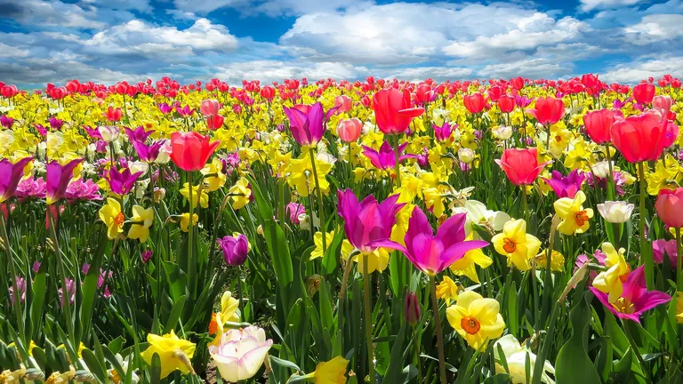
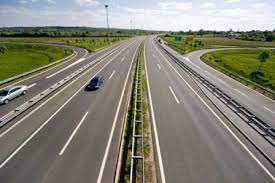
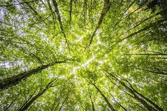

Priroda
Neki moj tekst koji je povezan s prirodom

Opis koji će se odnositi na prethodnu sliku prirode
Neki moj tekst koji je povezan s prirodom
Opis koji će se odnositi na prethodnu sliku prirode
Neki moj tekst koji je povezan s cvijećem
Opis koji će se odnositi na prethodnu sliku cvijeća
Neki moj tekst koji je povezan s planinama
Opis koji će se odnositi na prethodnu sliku planina
Neki moj tekst koji je povezan s zgradama

Opis koji će se odnositi na prethodnu sliku zgrade
Neki moj tekst koji je povezan s cestama
Opis koji će se odnositi na prethodnu sliku Ceste
Neki moj tekst koji je povezan s Šume
Opis koji će se odnositi na prethodnu sliku Šume